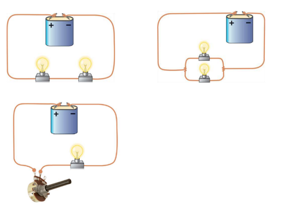

Uni
jorge Helper
Site Oficial
Home
Objetivo
Semestres
Avisos
Contate-nos
Site Oficial
Home
Objetivo
Semestres
Avisos
Contate-nos
Sistemas Elétricos
Nessa pagina iremos deixar utilitários de onde estudar!
Primeira Avaliação
Tensão
Vídeo:
TENSÃO, CORRENTE e RESISTÊNCIA ELÉTRICA e Qual a função deles na ELETRICIDADE (Muito fácil)!!!
- Elétrica de A à Z
Vídeo:
O que é tensão elétrica?
- Mundo da Elétrica
Corrente
Vídeo:
TENSÃO, CORRENTE e RESISTÊNCIA ELÉTRICA e Qual a função deles na ELETRICIDADE (Muito fácil)!!!
- Elétrica de A à Z
Playlist:
Corrente Elétrica, Lei de OHM e Potência - Davi Oliveira
- Física 2.0
Resistência
Vídeo:
TENSÃO, CORRENTE e RESISTÊNCIA ELÉTRICA e Qual a função deles na ELETRICIDADE (Muito fácil)!!!
- Elétrica de A à Z
Lei de Ohm
Playlist:
Corrente Elétrica, Lei de OHM e Potência - Davi Oliveira
- Física 2.0
Tipos de resistores variáveis
Vídeo:
Tipos de resistores e aplicações!
- Mundo da Elétrica
Termistor, LDR e Potenciômetro
Efeito Joule
Vídeo:
EFEITO JOULE: como a energia elétrica vira calor | RESUMO DE FÍSICA PARA O ENEM
- Curso Enem Gratuito
Circuito Elétrico e sua simbologia
Vídeo:
O QUE É UM CIRCUITO ELÉTRICO | Resumo de Física para o Enem
- Curso Enem Gratuito
Circuito Elétrico em série, em paralelo e misto
Playlist:
Associação de Resistores - Davi Oliveira
- Física 2.0
Protoboard
Vídeo:
Como funciona uma protoboard #ManualMaker Aula 3, Vídeo 2
- Manual do Mundo
Experimentos feitos em sala de aula

Ponto essencial
Fonte de força eletromotriz e seus tipos
Vídeo:
1. Força eletromotriz
- Física Sem Neura
Vídeo:
Fontes ideais | Engenharia Eletrica | Khan Academy
- Khan Academy Brasil
Leis de Kirchhoff
Vídeo:
As Leis de Kirchhoff - Davi Oliveira
- Física 2.0
Associação de resistores em série, em paralelo e misto
Playlist:
Associação de Resistores - Davi Oliveira
- Física 2.0
Vídeo:
Entenda um CIRCUITO ELÉTRICO MISTO | ELETRODIN MICA
- Chama o Físico
Extra (PDF, Livro, Sites, Etc)
PDF's
Fundamentos de Circuitos Elétricos - Alexander Sadiku
Fundamentos de eletricidade básica
Circuitos